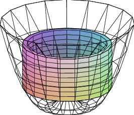
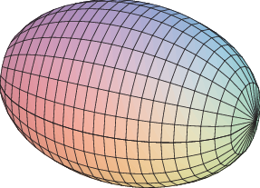
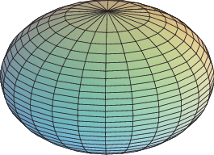

We have seen how to compute certain areas by using integration; some volumes may also be computed by evaluating an integral. Generally, the volumes that we can compute this way have cross-sections that are easy to describe.
Example 9.3.1 Find the volume of a pyramid with a square base that is 20 meters tall and 20 meters on a side at the base. As with most of our applications of integration, we begin by asking how we might approximate the volume. Since we can easily compute the volume of a rectangular prism (that is, a "box''), we will use some boxes to approximate the volume of the pyramid, as shown in figure 9.3.1: on the left is a cross-sectional view, on the right is a 3D view of part of the pyramid with some of the boxes used to approximate the volume.
Each box has volume of the form $\ds (2x_i)(2x_i)\Delta y$. Unfortunately, there are two variables here; fortunately, we can write $x$ in terms of $y$: $x=10-y/2$ or $\ds x_i=10-y_i/2$. Then the total volume is approximately $$\sum_{i=0}^{n-1} 4(10-y_i/2)^2\Delta y$$ and in the limit we get the volume as the value of an integral: $$ \int_0^{20} 4(10-y/2)^2\,dy=\int_0^{20} (20-y)^2\,dy= \left.-{(20-y)^3\over3}\right|_0^{20}= -{0^3\over3}- -{20^3\over3}={8000\over3}. $$ As you may know, the volume of a pyramid is $(1/3)(\hbox{height})(\hbox{area of base})=(1/3)(20)(400)$, which agrees with our answer.
Example 9.3.2 The base of a solid is the region between $\ds f(x)=x^2-1$ and $\ds g(x)=-x^2+1$, and its cross-sections perpendicular to the $x$-axis are equilateral triangles, as indicated in figure 9.3.2. Find the volume of the solid.
A cross-section at a value $\ds x_i$ on the $x$-axis is a triangle with base $\ds 2(1-x_i^2)$ and height $\ds \sqrt3(1-x_i^2)$, so the area of the cross-section is $$ {1\over2}(\hbox{base})(\hbox{height})= (1-x_i^2)\sqrt3(1-x_i^2), $$ and the volume of a thin "slab'' is then $$(1-x_i^2)\sqrt3(1-x_i^2)\Delta x.$$ Thus the total volume is $$\int_{-1}^1 \sqrt3(1-x^2)^2\,dx={16\over15}\sqrt3.$$
One easy way to get "nice'' cross-sections is by rotating a plane figure around a line. For example, in figure 9.3.3 we see a plane region under a curve and between two vertical lines; then the result of rotating this around the $\ds x$-axis, and a typical circular cross-section.

|
Of course a real "slice'' of this figure will not have straight sides, but we can approximate the volume of the slice by a cylinder or disk with circular top and bottom and straight sides; the volume of this disk will have the form $\ds \pi r^2\Delta x$. As long as we can write $r$ in terms of $x$ we can compute the volume by an integral.
Example 9.3.3 Find the volume of a right circular cone with base radius 10 and height 20. (A right circular cone is one with a circular base and with the tip of the cone directly over the center of the base.) We can view this cone as produced by the rotation of the line $y=x/2$ rotated about the $x$-axis, as indicated in figure 9.3.4.
At a particular point on the $x$-axis, say $\ds x_i$, the radius of the resulting cone is the $y$-coordinate of the corresponding point on the line, namely $\ds y_i=x_i/2$. Thus the total volume is approximately $$\sum_{i=0}^{n-1} \pi (x_i/2)^2\,dx$$ and the exact volume is $$ \int_0^{20} \pi {x^2\over4}\,dx={\pi\over4}{20^3\over3}={2000\pi\over3}. $$ Note that we can instead do the calculation with a generic height and radius: $$ \int_0^{h} \pi{r^2\over h^2}x^2\,dx ={\pi r^2\over h^2}{h^3\over3}={\pi r^2h\over3}, $$ giving us the usual formula for the volume of a cone.
Example 9.3.4 Find the volume of the object generated when the area between $\ds y=x^2$ and $y=x$ is rotated around the $x$-axis. This solid has a "hole'' in the middle; we can compute the volume by subtracting the volume of the hole from the volume enclosed by the outer surface of the solid. In figure 9.3.5 we show the region that is rotated, the resulting solid with the front half cut away, the cone that forms the outer surface, the horn-shaped hole, and a cross-section perpendicular to the $x$-axis.

We have already computed the volume of a cone; in this case it is $\pi/3$. At a particular value of $x$, say $\ds x_i$, the cross-section of the horn is a circle with radius $\ds x_i^2$, so the volume of the horn is $$\int_0^1 \pi(x^2)^2\,dx=\int_0^1 \pi x^4\,dx=\pi{1\over 5},$$ so the desired volume is $\pi/3-\pi/5=2\pi/15$.
As with the area between curves, there is an alternate approach that computes the desired volume "all at once'' by approximating the volume of the actual solid. We can approximate the volume of a slice of the solid with a washer-shaped volume, as indicated in figure 9.3.5.
The volume of such a washer is the area of the face times the thickness. The thickness, as usual, is $\Delta x$, while the area of the face is the area of the outer circle minus the area of the inner circle, say $\ds \pi R^2-\pi r^2$. In the present example, at a particular $\ds x_i$, the radius $R$ is $\ds x_i$ and $r$ is $\ds x_i^2$. Hence, the whole volume is $$ \int_0^1 \pi x^2-\pi x^4\,dx= \left.\pi\left({x^3\over3}-{x^5\over5}\right)\right|_0^1= \pi\left({1\over3}-{1\over5}\right)={2\pi\over15}. $$ Of course, what we have done here is exactly the same calculation as before, except we have in effect recomputed the volume of the outer cone.
Suppose the region between $f(x)=x+1$ and $\ds g(x)=(x-1)^2$ is rotated around the $y$-axis; see figure 9.3.6. It is possible, but inconvenient, to compute the volume of the resulting solid by the method we have used so far. The problem is that there are two "kinds'' of typical rectangles: those that go from the line to the parabola and those that touch the parabola on both ends. To compute the volume using this approach, we need to break the problem into two parts and compute two integrals: $$ \pi\int_0^1 (1+\sqrt{y})^2-(1-\sqrt{y})^2\,dy+ \pi\int_1^4 (1+\sqrt{y})^2-(y-1)^2\,dy={8\over3}\pi + {65\over6}\pi ={27\over2}\pi. $$ If instead we consider a typical vertical rectangle, {but still rotate around the $y$-axis,} we get a thin "shell'' instead of a thin "washer''. If we add up the volume of such thin shells we will get an approximation to the true volume. What is the volume of such a shell? Consider the shell at $\ds x_i$. Imagine that we cut the shell vertically in one place and "unroll'' it into a thin, flat sheet. This sheet will be almost a rectangular prism that is $\Delta x$ thick, $\ds f(x_i)-g(x_i)$ tall, and $\ds 2\pi x_i$ wide (namely, the circumference of the shell before it was unrolled). The volume will then be approximately the volume of a rectangular prism with these dimensions: $\ds 2\pi x_i(f(x_i)-g(x_i))\Delta x$. If we add these up and take the limit as usual, we get the integral $$ \int_0^3 2\pi x(f(x)-g(x))\,dx= \int_0^3 2\pi x(x+1-(x-1)^2)\,dx={27\over2}\pi. $$ Not only does this accomplish the task with only one integral, the integral is somewhat easier than those in the previous calculation. Things are not always so neat, but it is often the case that one of the two methods will be simpler than the other, so it is worth considering both before starting to do calculations.
|  |
Example 9.3.5 Suppose the area under $\ds y=-x^2+1$ between $x=0$ and $x=1$ is rotated around the $x$-axis. Find the volume by both methods.
Disk method: $\ds \int_0^1 \pi(1-x^2)^2\,dx={8\over15}\pi$.
Shell method: $\ds \int_0^1 2\pi y \sqrt{1-y}\,dy={8\over15}\pi$.
Exercises 9.3
Ex 9.3.1 Verify that $\ds\pi\int_0^1 (1+\sqrt{y})^2-(1-\sqrt{y})^2\,dy+ \pi\int_1^4 (1+\sqrt{y})^2-(y-1)^2={8\over3}\pi + {65\over6}\pi ={27\over2}\pi$.
Ex 9.3.2 Verify that $\ds\int_0^3 2\pi x(x+1-(x-1)^2)\,dx={27\over2}\pi$.
Ex 9.3.3 Verify that $\ds \int_0^1 \pi(1-x^2)^2\,dx={8\over15}\pi$.
Ex 9.3.4 Verify that $\ds \int_0^1 2\pi y \sqrt{1-y}\,dy={8\over15}\pi$.
Ex 9.3.5 Use integration to find the volume of the solid obtained by revolving the region bounded by $x+y=2$ and the $x$ and $y$ axes around the $x$-axis. (answer)
Ex 9.3.6 Find the volume of the solid obtained by revolving the region bounded by $\ds y=x-x^2$ and the $x$-axis around the $x$-axis. (answer)
Ex 9.3.7 Find the volume of the solid obtained by revolving the region bounded by $\ds y=\sqrt{\sin x}$ between $x=0$ and $x=\pi/2$, the $y$-axis, and the line $y=1$ around the $x$-axis. (answer)
Ex 9.3.8 Let $S$ be the region of the $xy$-plane bounded above by the curve $\ds x^3y=64$, below by the line $y=1$, on the left by the line $x=2$, and on the right by the line $x=4$. Find the volume of the solid obtained by rotating $S$ around (a) the $x$-axis, (b) the line $y=1$, (c) the $y$-axis, (d) the line $x=2$. (answer)
Ex 9.3.9 The equation $\ds x^2/9+y^2/4=1$ describes an ellipse. Find the volume of the solid obtained by rotating the ellipse around the $x$-axis and also around the $y$-axis. These solids are called ellipsoids; one is vaguely rugby-ball shaped, one is sort of flying-saucer shaped, or perhaps squished-beach-ball-shaped. (answer)
|  |  |
Ex 9.3.10 Use integration to compute the volume of a sphere of radius $r$. You should of course get the well-known formula $\ds 4\pi r^3/3$.
Ex 9.3.11 A hemispheric bowl of radius $r$ contains water to a depth $h$. Find the volume of water in the bowl. (answer)
Ex 9.3.12 The base of a tetrahedron (a triangular pyramid) of height $h$ is an equilateral triangle of side $s$. Its cross-sections perpendicular to an altitude are equilateral triangles. Express its volume $V$ as an integral, and find a formula for $V$ in terms of $h$ and $s$. Verify that your answer is $(1/3)(\hbox{area of base})(\hbox{height})$.
Ex 9.3.13 The base of a solid is the region between $f(x)=\cos x$ and $g(x)=-\cos x$, $-\pi/2\le x\le\pi/2$, and its cross-sections perpendicular to the $x$-axis are squares. Find the volume of the solid. (answer)